Fomoraij
Vihreät Herrat (Green Lords, Vihreät Herrat) kirosivat itsensä. Voi, he kyllä kertovat, ettei heillä ollut muuta vaihtoehtoa. Että heidän petolliset palvelijansa ajoivat heidät siihen. Etteivät he tienneet hintaa. Että Alla Olevat Alla Olevat valehtelivat heille. Mutta ei, he tiesivät, mitä tekivät. Heitä ei vain kiinnostanut.
Ja miksi olisi kiinnostanut? Eivätkö he olleet menettäneet kaiken? Eikö heitä ollut ajettu kodeistaan ja metsästetty kuin petoja, juuri niiden palvelijoiden toimesta, jotka he olivat luoneet? Niiden, jotka olivat heille velkaa kaiken?
Joten kyllä, kirottu olkoon, Vihreät Herrat tekivät sopimuksensa. He kutsuivat esiin pimeyden ja myrkyn. Antoivat sen virrata mieliensä läpi. Lihansa läpi. Maidensa läpi.
Ja kun sekään ei riittänyt kääntämään vuorovettä, kun heidät petettiin jälleen – tällä kertaa heidän Tekijä-tovereidensa (Makers, Tekijät) toimesta – ja heidät ajettiin yhteen viimeiseen ansaan… no, mitä he siitä välittivät?
Mitä he olisivat voineet välittää? Saakoot petturit pinnan. Toistaiseksi.
Ja niin, vääntyneinä ja vihasta mielettöminä, he menivät alas. Herrojensa helmaan. Siellä he odottavat. He synnyttävät uusia kauhuja. He vihaavat.
Ja eräänä päivänä he ehkä palaavat.
Nimiä
Slaavilaiselta kalskahtavia, mutta enemmän vokaaleja ja pehmeämpiä konsonantteja: Aawnaswasiya, Blaagu, Doogromil, Eleema, Loobimoor, Miwooslawa, Oolliyanaw, Rabomoor, Weelimir, Yoanaw
Koukut
- Tartunnan saaneet palvelijat Vaarat tarkkailevat kyläläisiä Puron (Stream, Puro) lähellä
- Maanjäristys avaa halkeaman luolakarhun pesään ja altistaa sen Fomoraijin pesälle ja vaikutukselle
- Metsästäjiä/ansastajia katoaa, ja he ilmaantuvat viikkoja myöhemmin hirvittävästi muuntuneina
- Fomoraijin kätyrit varastavat lapsia sängyistään ja raahaavat heidät herransa luo
- Metsän kansan (Forest Folk, Metsän kansa) kuvamerkit esittävät ihmisiä jonossa menossa luolaan lahjoja kantaen (Fomoraijille, joka salaa lumosi heidät)
Alla asuvat
Fomoraijit ovat asuneet Suurmetsän alla vuosisatoja. Heidän vaikutuksensa voi varmasti tuntea, ja joskus he lähettävät esiin kätyreitä, mutta pintaa he eivät ole nähneet sitten Vor Svetelikin Vor Svetelik kukistumisen.
Luodaksesi Fomoraijin aloita 2 teemalla Alla Olevista Alla Olevat.
Yhdistä niihin rajoite, joka estää sitä nousemasta esiin, sen pesän luonne ja 2-3 muotoa. Anna sille nimi ja ehkä pahaenteinen arvonimi. Kirjoita se uhaksi (konna, peto tai maaginen olento). Jos pelaajahahmot todennäköisesti taistelevat sitä vastaan, kirjoita se myös hirviöksi (ks. esimerkki ”Tyypillinen” Fomoraij).
| 1-2 | Vankeus: vahingossa, juonen vuoksi, oman kokonsa tai luonteensa vuoksi (Vaisto vangita muita, paeta) |
|---|---|
| 3-4 | Halveksunta: yllä olevaa maailmaa kohtaan, maailmaa, joka petti heidät (Vaisto rangaista kaikkea, mikä muistuttaa sitä sen menneisyydestä) |
| 5-6 | Rappio: sen mielen, sen voiman, sen minuuden (Vaisto iskeä ympärilleen) |
| 7-8 | Pelko: Faeista, Tekijöistä, vihatusta valosta (Vaisto nähdä uhkia kaikkialla) |
| 9-10 | Pakkomielle: hamstraaminen, kokeilut, kaivaminen tms., kaiken muun poissulkien (Vaisto tavoitella pakkomiellettään) |
| 11-12 | Kärsivällisyys: se odottaa, se kerää voimaa, se valmistautuu (Vaisto edistää suunnitelmiaan) |
| 1 | Ammottava luola, tulvinut; täynnä saaria ja epätodennäköisiä rakennelmia |
|---|---|
| 2 | Loputtomia karkeasti hakattuja tunneleita, kuin muurahaispesä |
| 3 | Ylösalainen metsä katosta riippuvia juuria, mukuloita ja sieniä |
| 4 | Sarja maanalaisia puroja, jokia ja järviä, kaikki kauhuja kuhisevia |
| 5 | Syvä, pystysuora kuilu, joka päättyy valkoisesta kivestä tehtyyn holviin |
| 6 | Tunneleita ja kammioita, joiden jokainen tuuma on vuorattu luilla |
| 7 | Jättimäisen, ikiaikaisen titaanin kivettynyt vatsa |
| 8 | Holvattuja tunneleita, joita vuoraavat raudalla kyllästetyn puun juuret, ruostuneet ja vuotavat |
| 9 | Kalkkikiviluolia, joiden seinät sykkivät punakidettä |
| 10 | Kalkkikiviluolia ja -pylväitä, märkiä ja tippuvia, limaisen elämän koristamia |
| 11 | Oudon sileitä tunneleita, joita peittää lämmin, sykkivä orgaaninen aines |
| 12 | Valtava valkoisesta kivestä tehty kammio, jonka katosta kasvaa alaspäin mahtava kuollut puu |
Fomoraijien pesät ovat aina maan alla ja Suurmetsän Suurmetsä alla, ja niihin pääsee luolien ja Vihreiden Herrojen raunioiden Vihreät Herrat kautta. Yllä olevat kohteet ovat usein Alla Olevien Alla Olevat turmelemia.
| 1 | Pienempien olentojen parvi/parvimieli |
|---|---|
| 2 | Luuton/puristautuva/muodoton |
| 3 | Sienimäinen/jäkälämäinen/sammaleinen |
| 4 | Hyönteismäinen/kuorellinen |
| 5 | Liikaa raajoja/silmiä/suita |
| 6 | Massiivinen/laaja/rönsyilevä |
| 7 | Kalvakka/lihaisa/kyhmyinen |
| 8 | Voimakas/kaivautuva/repivä |
| 9 | Kasvimainen (juuret, juurakot, sipulit) |
| 10 | Limainen/tihkuva/räkäinen |
| 11 | Lonkeroita/köynnöksiä/tuntosarvia/ antenneja |
| 12 | Matomainen/etanamainen/toukkamainen |
Yhdistä 2-3 edellisistä siihen hämärästi ihmismäiseen muotoon, joka sillä oli Vihreänä Herrana.
Pelaajahahmot ovat kohdanneet Suurmetsässä kauhuja – hopeista limaa tihkuvia crinwineja ja ampiaisia, joiden myrkky aiheuttaa harhoja. Olin jo päättänyt, että Alla Olevat olivat turmelleet nämä olennot teemojen ”mielettömyys/kaaos/raunio/elohopea” ja ”turmelus/tauti/myrkky/syöpäläiset” pohjalta.
Nyt ajattelen, että niiden takana on Fomoraij. Pidän kaksi teemaa ja heitän rajoitteeksi ”vankeus”. Sen pesäksi heitän ”sarja maanalaisia puroja, jokia ja järviä, kaikki kauhuja kuhisevia”. Sen muodoksi saan ”liikaa raajoja/silmiä/suita”, ”pienempien olentojen parvi” ja ”limainen/tihkuva/räkäinen”. Pohdin ja keksin:
Yaarowslow Moninainen on loukussa saarella maanalaisessa järvessä, jota pienet pohjavesinorot ruokkivat. Se on muuttanut lihansa tihkuvaksi, hopeiseksi pesäksi, jossa asuu loputon vipeltävien ja surisevien kauhujen parvi, joka toimii sen silminä, käsinä ja suina. Vuosisatojen ajan syöpäläiset ovat kaivautuneet kiven läpi päästäkseen pintaan. Hiljattain se onnistui, ja sen hopeiset sikiöt tahraavat nyt lähdettä syvällä Suurmetsässä.
Artefaktit
 Erilaisia aarteita
Erilaisia aarteita
- Säilötty kimeeran ruumis, täytetty näytteille (liikkumaton, Arvo 1)
- Pussi hohtavaa jauhetta ◇ ( annosta, Arvo 2 oikealle ostajalle); nauti annos, niin alat pakonomaisesti kertoa salaisuuksia ympärilläsi oleville
- Ruokapöydän kokoinen kiillotettu akaattiviipale, joka tuo painajaisia ja synkkiä ajatuksia niille, jotka viipyvät sen läheisyydessä (liikkumaton, Arvo 2)
- Pari rubiineilta näyttäviä kiviä (Arvo 3), jotka on asetettu kammottavan patsaan silmiksi; ne ovat todellisuudessa punakiteitä Alla Olevat ja synnyttävät julman verenhimon siihen, joka pitää niitä hallussaan.
Verestävä meripihka
◇ kukin, maaginen
nyrkin kokoista jalokiveä, täynnä punamustia sulkeumia.
Kun tiputat verta meripihkalle, nimeä läsnäolossasi oleva ilmentynyt henki ja heitä +CHA. Jos hengellä on ehjä side, heitä haitalla. 10+:lla henki vangitaan meripihkaan;
7-9:llä meripihka alkaa imeä henkeä sisäänsä, mutta se voi vielä taistella vastaan; 6-:lla henki riistäytyy irti ja meripihka särkyy.
Kun vangitset hengen verestävään meripihkaan, se kärsii tuskia eikä voi ilmentyä. Vain yksi henki voi olla vangittuna kerrallaan. Kun kosketat meripihkaa paljaalla iholla, voit viestiä sisällä olevan hengen kanssa ja vapauttaa sen, jos haluat (vaikket itse olisi vanginnut sitä).
Kun verestävä meripihka löydetään, siinä on todennäköisesti henki, joka on ollut loukussa tuskissaan vuosisatoja.

Unililja-allasKorotettu allas kirkasta vettä. Sen sisällä kasvaa outo lilja, jonka köynnökset valuvat reunan yli ja peittävät lattian kätkien vaalenneita luita. Köynnökset kahisevat elävien olentojen lähestyessä, ja lempeä tuuli lupaa ennustuksia ja viisautta.
Kun annat liljan köynnöksen luikerrella ihosi alle, ota vahinkoa (ohittaa panssarin) ja vaivu syvään uneen. Heitä +WIS: 10+:lla näet unta viisaudesta – kysy PJ:ltä mikä tahansa kysymys ja saat hyödyllisen, rehellisen vastauksen, vaikkakin vertauskuviin verhottuna; 7-9:llä näet unta viisaudesta (kuten 10+:lla) mutta myös nälästä, epätoivosta ja puutteesta – merkitse heikkous herätessäsi; 6-:lla olet loukussa loputtomassa painajaisessa – merkitse kaksi heikkoutta, etkä herää, ellet löydä uloskäyntiä tai joku pelasta sinua ulkopuolelta.
Joka tapauksessa unesi näkyvät selvästi altaan vedessä. Sinulla on tunne, että jokin muukin saattaa katsella.
 Pienet arkaanit
Pienet arkaanit
Valitse 1 tai pyydä jotakuta heittämään.
| 1-2 | Suuri puinen ruukku |
|---|---|
| 3-4 | Ruosteinen pata |
| 5-6 | Outo riipus |
Suuret arkaanit
Nämä saattavat hyvinkin liittyä Fomoraijeihin.
- Luomettoman Kehrän Sauva Luomettoman Kehrän Sauva
- Demoninnahkaviitta Demoninnahkaviitta
Vaarat
Erilaisia luomuksia
- Kimeerat Vihreät Herrat, jalostetut sotaan tai sairaaksi huviksi
- Vaaralliset kasvustot Vihreät Herrat, jotka suojelevat Fomoraijin pesää tai laajentavat sen vaikutusta
- Kimeerojen palanneet Kuolema ja kuolemattomat, synkkien henkien riivaamina
- Crinwinit Crinwin, llamudwrit Vihreät Herrat, rhagednit Vihreät Herrat, swynit Vihreät Herrat tai zrajedakit Vihreät Herrat – mutta jotenkin erilaisina, jotenkin pahempina
- Lähes mikä tahansa Vor Svetelikin Vor Svetelik kauhuista
Palvelevat henget
- Alla Olevien emanaatiot Alla Olevat
- Erämaan henget Erämaan henget, kurjaan palvelukseen sidottuina
- Sidotut aaveet Kuolema ja kuolemattomat, tiukassa talutushihnassa
- Sitomattomat haamut Kuolema ja kuolemattomat, kuin sakaalit nuuskimassa teurastamon ympärillä
 Tartunnan saanut palvelija
Tartunnan saanut palvelija
Fomoraijit kietovat joskus pauloihinsa yllä olevan maailman olentoja: vangitsevat heitä, houkuttelevat heitä vallan lupauksilla tai pakottavat heikkotahtoiset palvelukseensa.
Sitten ne tartuttavat uhrin ja muuttavat tämän tahtonsa jatkeeksi.
Aloita perusolennolla ja valitse tai heitä sitten tartunnan luonne, hallintakeino ja enintään 3 lahjaa. Tulkitse ne sen pohjalta, mitä tiedät sen herrasta. Päivitä perusolennon tunnisteet, arvot, piirteet, vaisto ja siirrot sen mukaisesti.
| 1-2 | Ötökkä/mato/köynnös, joka on kaivautunut heidän aivoihinsa/selkärankaansa |
|---|---|
| 3-4 | Iljettävä aine, ruiskutettu/hengitetty/ juotu |
| 5-6 | Sieni/kasvi, joka kasvaa heidän ihonsa alla |
| 7-8 | Heidän ruumiinsa riivaava henki, jota sitovat monimutkaiset arvet/tatuoinnit |
| 9-10 | Syöpäläisten massa/yksittäinen kauhu, joka syö heitä sisältä ulospäin |
| 11-12 | Yksi tai useampi punakiteen siru heidän kalloonsa upotettuna |
| 1-2 | Murskaamalla heidän tahtonsa |
|---|---|
| 3-4 | Syömällä pois sitä, mitä he aikanaan olivat |
| 5-6 | Täyttämällä heidät euforialla/ nautinnolla |
| 7-8 | Lupaamalla heille valtaa/kuolemattomuutta/kostoa/parannuskeinoa tms. |
| 9-10 | Piinaamalla heitä tuskalla |
| 11-12 | Heitä kahdesti tai keksi jotain uutta |
Jos haluat, heitä hallinnan laajuuden määrittämiseksi.
| 1 | Ulottuvuus-, likellä- tai kaukana-hyökkäys (lonkerot, syljetyt mönjäpallot, sinkoavat piikit tms.) |
|---|---|
| 2 | Kauhistuttava läsnäolo; kyky levittää paniikkia/pelkoa/kauhua |
| 3 | Aluehyökkäys (myrkkypilvi, nokkosryöppy, psyykkinen kirkaisu tms.) |
| 4 | Muodoton/muovautuva/ muotoaan muuttava hahmo |
| 5 | Jatkuva yhteys herraansa, kyky jakaa aisteja/ajatuksia/ sanoja/voimaa |
| 6 | Keino levittää tartuntaansa ja/ tai herransa vaikutusta (tarkoituksella, sivumennen tai molemmin tavoin) |
| 7 | Naamioituminen/hiiviskely/kyky välttää huomio |
| 8 | Poikkeuksellinen voima/nopeus/raivo/tappavuus |
| 9 | Vaikutusvalta/hallinta muiden mieliin |
| 10 | Kätyrit/palvelijat/kyky lähettää itsestään jatkeita |
| 11 | Liikkuvuus (hyppiminen, lentäminen, kiipeily, kaivautuminen, puristautuminen tms.) |
| 12 | Luonnoton sitkeys/elinvoima/kestävyys |
Jos pelaajahahmo tai tärkeä sivuhahmo saa tartunnan Fomoraijilta (tai joltakin sen palvelijoista), kirjoita se uhaksi (vitsaus). Jos pelaajahahmosta tulee vapaaehtoisesti tartunnan saanut palvelija, harkitse pelikirjaliitteen luomista Kahlitun innoittamana (ks. Kirja I, Kahlittu).
Haluan isoa ja pelottavaa palvelijaa Yaarowslow Moninaiselle ”Tyypillinen” Fomoraij, hagria Suurmetsä, joka kompastui tahrattuun lähteeseen. Heitän ”iljettävä aine, ruiskutettu/ hengitetty/juotu” ja ajattelen Yaarowslow'n hopeista limaa. Hallintakeinoksi saan ”syömällä pois sitä, mitä he aikanaan olivat” ja kuvittelen hopeisen liman turmelevan sitä sisältäpäin, korvaavan sen veren ja elimet ja hukuttavan sen mielen ääniin ja harhoihin. Lahjoiksi valitsen ”luonnoton sitkeys/elinvoima/kestävyys” ja ”keino levittää tartuntaansa ja/tai herransa vaikutusta”. Sitten heitän kolmannen lahjan ja saan ”aluehyökkäys”.
Päivitän hagrin arvolohkon vastaamaan näitä muutoksia, ja tulos on tämä:
Tartunnan Saanut Hagr
HP 20; PANSSARI 4 (sitkeys), 1 pronssia vastaan (läskinen nahka)
VAHINKO lihaisat kourat (käsi, lähellä, tarttuva, sysäävä) tai puunrunko (ulottuvuus, alue, karkea, sysäävä) tai heitetty raskas esine (heitettävä, sysäävä)
ERITYISPIIRTEET tarttuva veri; kärsii harhoista, käyttäytyy arvaamattomasti VAISTO levittää herransa vaikutusta
- Naulitse joku pahalla silmällään ja aiheuta musertavia harhoja
- Kisko asioita maasta kuin ne olisivat painottomia
- Kaiverra pakonomaisesti herransa sinettejä esineisiin
- Raivostu järjettömästi
- Purskauta tarttuva, hopeinen pilvi (ulottuvuus, alue, lataus)
”Tyypillinen” Fomoraij
HP 26; Panssari 4 (sitkeys), 0 pronssia vastaan
Vahinko mahtavat iskut (käsi, lähellä, sysäävä)
Erityispiirteet aistii kaiken, mitä sen pesässä tapahtuu (mutta ei välttämättä tule ajatelleeksi sitä)
Vaisto [Käytä rajoitetta ohjenuorana]
- Lyö ällikällä kaikki läsnäolijat
- Väännä, muunna tai muuta eläviä olentoja eleellä
- Käytä lähellä olevia kasveja ja petoja oman itsensä jatkeina
- Paranna haavat, jotka on tehty millä tahansa muulla kuin orikalkilla
Mikään Fomoraij ei ole todella tyypillinen; käytä yllä olevia arvoja lähtökohtana. Fomoraijin rajoite määrää sen vaiston. Lisää tai muuta sen tunnisteita, arvoja, erityispiirteitä ja siirtoja niiden teemojen, rajoitteen, pesän ja muotojen pohjalta, jotka olet määrittänyt.
Yaarowslow Moninainen on lihamassa, josta tihkuu tarttuvaa hopeista limaa, ja vipeltävien, luikertelevien ja surisevien kauhujen isäntä; kauhut toimivat sen tahdon jatkeena.
Yaarowslow Moninainen
HP 24; Panssari 5 (sitkeys, ei elimiä), 2 pronssia vastaan (paksu nahka)
VAHINKO syövyttävän liman purskeet (käsi, lähellä, alue, sotkuinen, 1 lävistävä)
ERITYISPIIRTEET suurelta osin liikkumaton, parvimieliyhteys syöpäläisparviinsa; puolet vahingosta pistoista tai murskaavista iskuista
VAISTO paeta
- Musertaa viholliset kauhulla ja tuhansilla kirkuvilla äänillä
- Tartuta mieliä ja ruumiita hopeisella limalla
- Käytä parviaan ja hopeista limaansa oman itsensä jatkeena
- Paranna haavat, jotka on tehty millä tahansa muulla kuin orikalkilla
Hopeisten Syöpäläisten Parvi
HP 6; PANSSARI 5 (sitkeys, ei elimiä), 1 pronssia vastaan VAHINKO puremat ja pistot (käsi, 1 lävistävä)
ERITYISPIIRTEET parvimieliyhteys Yaarowslow'hun; osaa lentää/ryömiä/kaivautua/uida; lävistävät/viiltävät aseet eivät vahingoita sitä; ottaa puolet vahingosta murskaavista aseista; altis aluevaikutuksille (kuten nafta-tulelle).
VAISTO toteuttaa Yaarowslow'n tahtoa
- Nielaise uhri sisäänsä
- Ruiskuta tarttuvaa hopeista limaa
- Hajaannu ja kokoonnu muualla